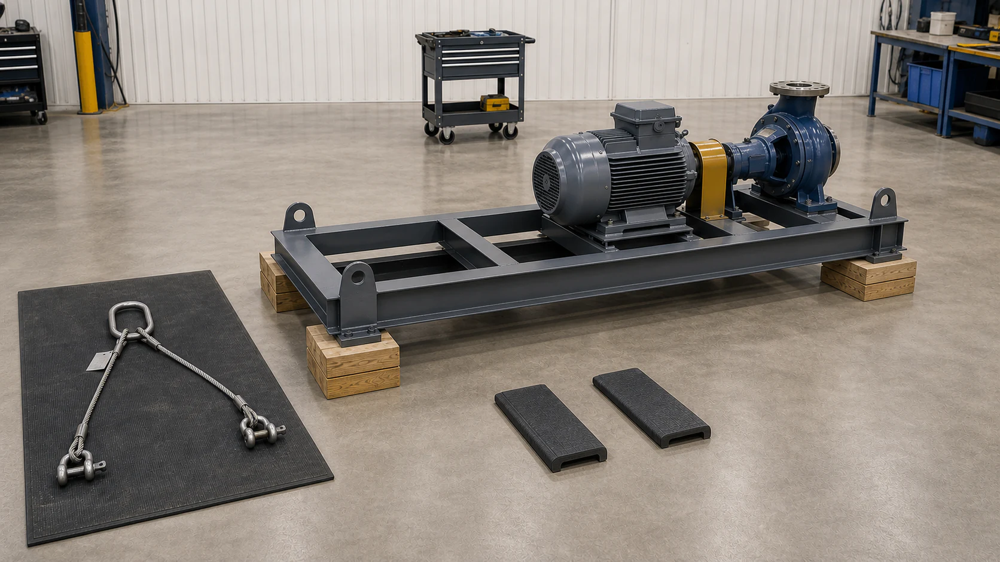
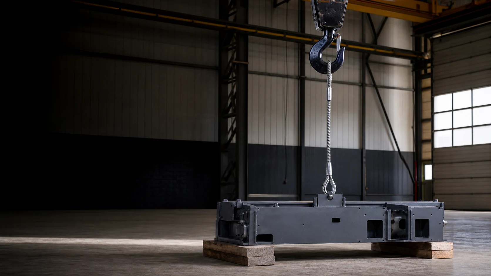

Step 1 of 6
Establish the load
Why it matters
Field example
Make the field decision
Choose the best field decision.

Follow one clear six-step course from establishing the load through the trial lift. Make each field decision, learn why it controls the lift, then test your judgment.
Work left to right. Each step gives you one realistic scene, the controlling idea, a field example, and one decision to make.

Angle is only one input. Use the sling tag, hitch rating, actual center of gravity, hardware ratings, and assembly condition. This comparison does not establish a rated capacity.
Select a component to connect its function, failure exposure, inspection lens, authority, and field decision.
Reference: ASME B30.9 · B30.10 · B30.20 · B30.26Verify the actual sling tag, hardware markings, manufacturer data, lift plan, and condition before use.
Inspect a staged pump-skid lift, separate verified evidence from assumptions, then make the four controlling decisions. This is practice — not the final knowledge check.
Find all six evidence points to unlock this section. Each question asks for the controlling decision and the reason the crew would continue, correct, or stop.
Complete all six guided decisions, then earn 100% on this knowledge check. Completion measures field judgment—not clicks through the optional reference tools.
You completed all six decisions and demonstrated 100% scenario mastery. Carry the sling identification tag, marked hardware capacity, computed working angle, and stop-work responsibility into task-specific training.
| System | Component | Function | Field lens | Rejection trigger |
|---|
Training reference only. Follow the sling identification tag, manufacturer capacity data, applicable inspection criteria, lift plan, and applicable requirements.
The 6-step course is the main learning path. Open these focused tools for deeper practice, calculations, component inspection criteria, or instructor-led delivery.